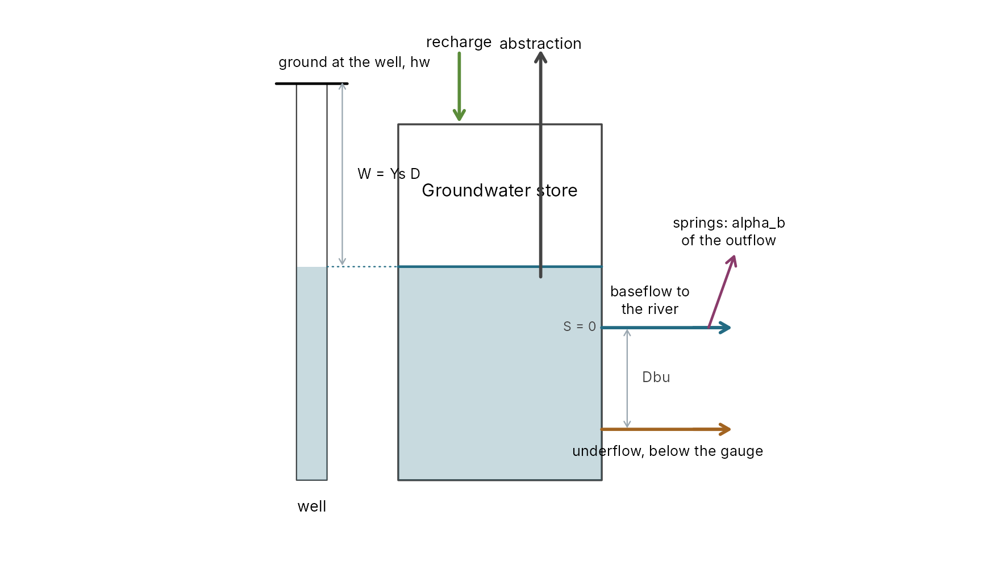
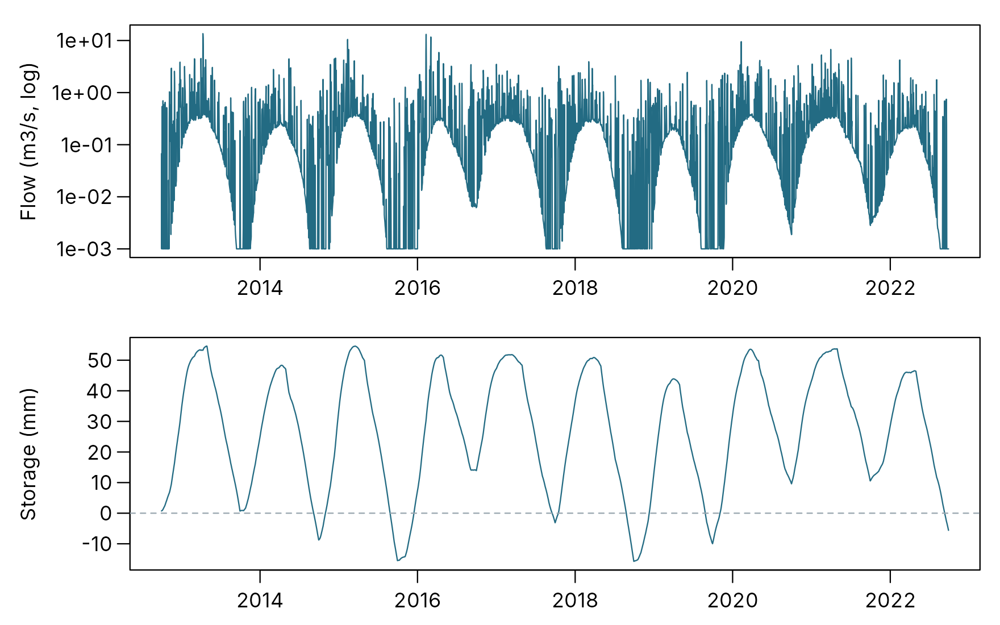
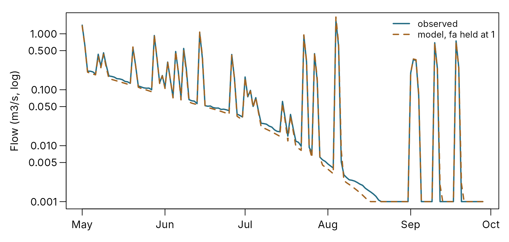
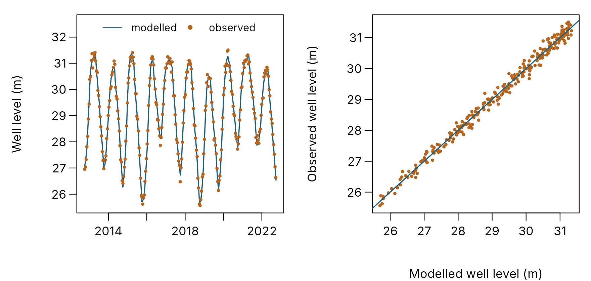

Using the groundwater extension: abstraction, losses and wells
pdmS7 documentation
Source:vignettes/groundwater-extension.Rmd
groundwater-extension.RmdThe standard PDM assumes every drop that reaches groundwater leaves by the river gauge. Some catchments break that rule. Boreholes pump from the aquifer. Water leaves below the gauge, or across the topographic divide to a neighbour. Chalk streams dry up in late summer and start again in winter. The groundwater extension (Moore and Bell, 2002) gives the groundwater store the outlets these need, and a modelled well level to check it against a borehole.
This guide covers when to use it, how to prepare the data, how to set
it up and calibrate it, and how to check the result. It works through a
made-up chalk catchment whose true parameters are known, so each step
can be checked against the answer. The equations are in Model equations;
?groundwater_extension documents every parameter.
When you need it
| What you see | What it suggests | Part of the extension |
|---|---|---|
| The river stops flowing in dry summers and starts again in winter | the water table falls below the bed | negative storage, through abstraction or underflow |
| Licensed abstractions from the aquifer, or a record of pumping | water removed before it reaches the river | abstraction, ca and fa
|
| Annual flow well below rain minus evaporation, year after year, with the rain checked | water leaving below or around the gauge | underflow (ku, dbu) or springs
(alpha_b) |
| Annual flow above what the rain can explain, the rain and area checked | groundwater arriving from beyond the divide | springs with a negative alpha_b (an import) |
| A borehole with a long record of levels | a check on the groundwater store | the well level, ys and hw
|
Check the rain, the evaporation and the catchment area before reaching for losses. A gauge that reads low, or an area a few per cent too large, looks exactly like water leaving the catchment. The extension will fit either, and calibrate the error into the groundwater.
What it adds

The extended groundwater store. Storage S is measured from the baseflow outlet: below zero the river gets no baseflow. Underflow drains through a lower outlet, Dbu below the first. A share of the store’s outflow leaves as springs. The well’s level is the store’s level scaled by the well factor.
-
Abstraction comes out of the store before anything
else: the store’s input is recharge less abstraction,
cA + fA × Ar, whereAris the recorded abstraction,fAa factor on it andcAa constant rate. When the input is negative the store drains, and once it reaches zero the baseflow stops. The store can go on below zero: the river then gets no baseflow until recharge has refilled the store. -
Underflow leaves through a second outlet
Dbumm below the baseflow outlet, linearly in the water above it, with time constantku. It is water that passes the gauge unseen, in the gravels or the aquifer. It goes on after the river has stopped, until the store falls to its own outlet. -
Springs take a share
alpha_bof the store’s outflow out of the catchment. A negative share brings water in. -
The well level is
hw − Ys Dmetres, whereDis the storage deficit belowSmax_bin mm. It does not change the flow.
The extension applies to linear, quadratic and cubic groundwater stores. The exponential store cannot take it: it needs a positive flow at all times, so it cannot run dry. Nor is it offered with demand recharge, which draws on the store’s room below a fixed capacity.
Preparing the data
Abstraction
The model takes abstraction as a forcing column,
abstraction, in mm per step over the whole catchment,
beside rain and pet. Abstraction records
usually come in megalitres a day (Ml/d). One megalitre over one km² is
one mm, so
mm per step = Ml/d × (step in hours / 24) / area in km²
area_km2 <- 45
pumped_mld <- c(8, 12, 31.5) # three days' pumping, Ml/d
pumped_mld * (24 / 24) / area_km2 # mm per daily step
#> [1] 0.1777778 0.2666667 0.7000000- Include only abstractions from the aquifer the model represents. Surface-water intakes come out of the river, not the groundwater store; subtract them from the observed flow or add them back to it instead.
- Discharges back into the river, such as sewage works, are not abstraction. Correct the observed flow for them.
- Fill gaps before the run: the model refuses missing values. Licences give an upper limit; returns often give monthly totals, which can be spread evenly over each month’s steps.
- Without any record, leave the column out and use
ca, a constant rate in mm/h.
Well levels
fit_well_level() takes the observed well level in
metres, one value per step of the run, with NA where there
is no reading. Weekly or monthly dips are enough. Convert dip readings
(depth below a datum) to levels first, so a higher number means more
water.
Setting it up
The extension is a list under the groundwater store in the configuration. Set only the parts the catchment needs: a part left out is switched off, and calibration searches only the parameters that are set.
cfg <- pdm_presets("standard")
cfg$dt <- 24
cfg$area_km2 <- 45
cfg$groundwater <- list(
type = "cubic", kb = 1e6,
extension = list(
ku = 1e5, dbu = 100, # underflow, h and mm
alpha_b = 0, # springs: start with none
fa = 1, # use the abstraction record as it is
smax_b = 600, ys = 0.05, hw = 75 # well level; no effect on flow
)
)
model <- pdm_from_config(cfg)| Parameter | Units | What it does | Starting point |
|---|---|---|---|
ca |
mm/h | constant abstraction | 0, or the licensed total when nothing better is known |
fa |
– | factor on the recorded abstraction | 1; search it only if the record is doubtful |
ku |
h | underflow time constant | 10^4 to 10^6 h; larger is slower |
dbu |
mm | depth of the underflow outlet below the baseflow outlet | 100 to 1000 mm |
alpha_b |
– | share of outflow lost to springs; negative imports | 0 |
smax_b |
mm | storage for the deficit and well level | any value, kept fixed: it only moves the datum |
ys |
m/mm | well factor: m of water table per mm of deficit |
1 / (1000 × specific yield); 0.02 to 0.2 for chalk |
hw |
m | well level datum | fitted with ys
|
ys is not the specific yield itself. A specific yield of
1 per cent (0.01) gives ys = 1 / (1000 × 0.01) = 0.1: each
mm of water taken from the store lowers the water table 0.1 m.
A worked example
The example is a made-up chalk winterbourne of 45 km², ten years of daily rain, with heavier pumping in summer. The truth has a slow cubic store, underflow 200 mm below the baseflow outlet, a tenth of the outflow lost to springs, and a borehole in the aquifer. The observed flow carries a 5 per cent gauge error.
rain <- synthetic_rain("2012-10-01", years = 10, dt = 24, seed = 7)
forcing <- data.frame(time = rain$time, rain = rain$rain, pet = rain$pet)
month <- as.integer(format(forcing$time, "%m"))
forcing$abstraction <- ifelse(month %in% 5:9, 0.7, 0.7 / 3) # mm/day: 31.5 and 10.5 Ml/d
truth <- pdm_presets("standard")
truth$dt <- 24
truth$area_km2 <- 45
truth$groundwater <- list(type = "cubic", kb = 5e6, extension = list(
ku = 40000, dbu = 200, alpha_b = 0.1, fa = 1, smax_b = 600, ys = 0.08, hw = 75
))
true_model <- pdm_from_config(truth)
spun <- spin_up(true_model, forcing[1:365, ], cycles = 3)
true_run <- run_pdm(true_model, forcing, spun)$output
set.seed(3)
error <- stats::arima.sim(list(ar = 0.8), nrow(forcing), sd = 0.05 * 0.6)
observed <- true_run$q_m3s * exp(as.numeric(error))
dips <- rep(NA_real_, nrow(forcing))
every_fortnight <- seq(5, nrow(forcing), by = 14)
dips[every_fortnight] <- true_run$well_level_m[every_fortnight] +
stats::rnorm(length(every_fortnight), sd = 0.15)
The made-up record. Top: observed flow on a log scale, with flows below 0.001 m3/s drawn at 0.001: the floor is the river dry, broken by storm runoff. Bottom: the true groundwater storage; below zero (dashed) the river gets no baseflow.
The river stops in late summer in most years, for between 39 and 87 days a year, and in the wettest year for only 10.
Calibrating
The search
Calibrate the extension’s flow parameters with the rest of the model. Three choices matter:
-
Widen
kbfor a slow store. The default bounds suit most catchments, but a chalk aquifer can need a cubickbabove the default upper limit of 10^6. A parameter at its bound is the sign: widen it and calibrate again. -
Leave out
cawhen there is an abstraction record.caandfado the same job, and searching both lets them trade. -
Fix what you know. If the abstraction record is
trusted, hold
faat 1 (below, the two runs compare searching it with holding it).
start <- truth
start$groundwater$kb <- 1e6
start$groundwater$extension[c("ku", "dbu", "alpha_b")] <- list(1e5, 100, 0)
calibrate_losses <- function(search_fa) {
bounds <- calibration_bounds(start, overrides = list(groundwater.kb = c(1e4, 1e8)))
bounds <- bounds[bounds$path != "groundwater.extension.ca", ]
if (!search_fa) bounds <- bounds[bounds$path != "groundwater.extension.fa", ]
window <- forcing$time < as.POSIXct("2019-10-01", tz = "UTC")
calibrate_pdm(
start, forcing[window, ], observed[window],
lower = stats::setNames(bounds$lower, bounds$path),
upper = stats::setNames(bounds$upper, bounds$path),
warmup = 365, objective = "nse", method = "dds", control = list(maxit = 1500),
log_scale = bounds$path[bounds$scale == "log"], seed = 1
)
}
searched <- calibrate_losses(search_fa = TRUE)
held <- calibrate_losses(search_fa = FALSE)Seven years calibrate the model; the last three are kept back to test it.
What the flow can and cannot tell
| parameter | truth | fa_searched | fa_held_at_1 |
|---|---|---|---|
| kb | 5,000,000 | 3,680,000 | 4,100,000 |
| ku | 40,000 | 96,600 | 294,000 |
| dbu | 200 | 867 | 1,550 |
| alpha_b | 0.1 | 0.0196 | 0.149 |
| fa | 1 | 0.857 | 1 |
| run | abstraction | underflow | springs | total loss | NSE, test years |
|---|---|---|---|---|---|
| truth | 156 | 50 | 8 | 215 | NA |
| fa_searched | 134 | 81 | 2 | 216 | 0.996 |
| fa_held_at_1 | 156 | 47 | 13 | 216 | 0.996 |
Both calibrations fit the test years almost perfectly, and both find
the total loss: about 215 mm a year in truth, 216 and
216 mm in the two fits. Neither finds the true parameters. The flow at
the gauge sees how much water leaves, not which way it goes, so
underflow, springs and pumping trade against each other. With
fa searched, the fit scales the pumping down and makes up
the difference by underflow. With fa held at 1, the volumes
come closer: underflow 47 mm against 50, springs 13 against 8.
ku and dbu still wander: a slow underflow from
a deep outlet removes much the same water as a quicker one from a
shallow outlet.
So:
-
Judge the losses by their volumes, not by
ku,dbuandalpha_bone at a time. Report the loss in mm a year by each route. -
Pin what you know. A trusted abstraction record
fixes
fa; a known spring line or a hydrogeologist’s estimate of the export boundsalpha_b. Every route fixed from outside makes the others better defined. - Do not read too much into the split when nothing pins it. A model that loses the right amount by the wrong route forecasts the river well, but a change in pumping will be misjudged.
The dry spells
The extension earns its place if the model stops when the river stops.
| 2013 | 2014 | 2015 | 2016 | 2017 | 2018 | 2019 | 2020 | 2021 | 2022 | |
|---|---|---|---|---|---|---|---|---|---|---|
| observed | 51 | 69 | 73 | 54 | 39 | 70 | 87 | 44 | 10 | 71 |
| fa_searched | 55 | 75 | 79 | 56 | 39 | 74 | 93 | 45 | 10 | 83 |
| fa_held_at_1 | 56 | 71 | 75 | 54 | 39 | 72 | 91 | 48 | 12 | 77 |

The driest test summer, May to December: observed flow and the model with fa held at 1, on a log scale. The model dries up about ten days before the river and starts again with it.
A model without the extension cannot do this: its baseflow only ever recedes, so it holds a trickle all summer. Count the dry days in the observed and modelled flow for each year, as above. A model that dries too early is losing too much in summer; one that never dries is losing too little or has no route to below zero.
The well level
The well level does not affect the flow, so it is fitted after the
flow is calibrated. fit_well_level() fits ys
and hw by least squares against the dips.
fit <- fit_well_level(outputs$held, dips, time = forcing$time)
fit
#> Well level fitted to 261 readings
#> ys 0.08106 m/mm (specific yield 0.0123)
#> hw 75.768 m, with smax_b 600 mm
#> RMSE 0.149 m, R2 0.991
#> Set extension ys and hw to these values, with the same smax_b.
Left: the fitted well level through the record, with the fortnightly dips. Right: each dip against the modelled level at the same step.
The fit gives ys of 0.0811 against the true
0.08, a specific yield of 1.2 per cent. Put the values into
the configuration, with the same smax_b:
final <- held$config
final$groundwater$extension$ys <- fit$ys
final$groundwater$extension$hw <- fit$hwWhat to look for:
- A specific yield that makes sense for the rock. Chalk is usually 0.5 to 5 per cent; a sandstone 5 to 20. A value far outside the range means the store and the well disagree about how much water moves.
- Loops in the scatter. A well some way from the river can lag the store by weeks. The points then trace loops, rising one way and falling the other. The store’s timing is right for the river, not for the well.
- Seasonal shapes that differ. If the well peaks months after the modelled store, the borehole sees a slower part of the aquifer than the one feeding the river.
The well checks the groundwater store, but it cannot settle the split
of the losses: fitted to the calibration with fa searched,
the dips give an R² of 0.986, against 0.991 with fa held.
Both stores rise and fall alike; they differ in where the water goes,
which the well does not see.
Checklist
- Check the rain, the evaporation, the area and the flow first. A data error looks like a loss.
- Prepare the abstraction column in mm per step, aquifer sources only, gaps filled.
- Switch on only the parts the catchment needs, starting from the table above.
- Calibrate with
caleft out when there is a record,faheld at 1 when it is trusted, and the store’skbwidened if it sits at its bound. - Report the losses as volumes by route, mm a year, with the test-period score.
- Count dry days, observed against modelled, year by year.
- Fit the well level with
fit_well_level(), and check the specific yield and the scatter.